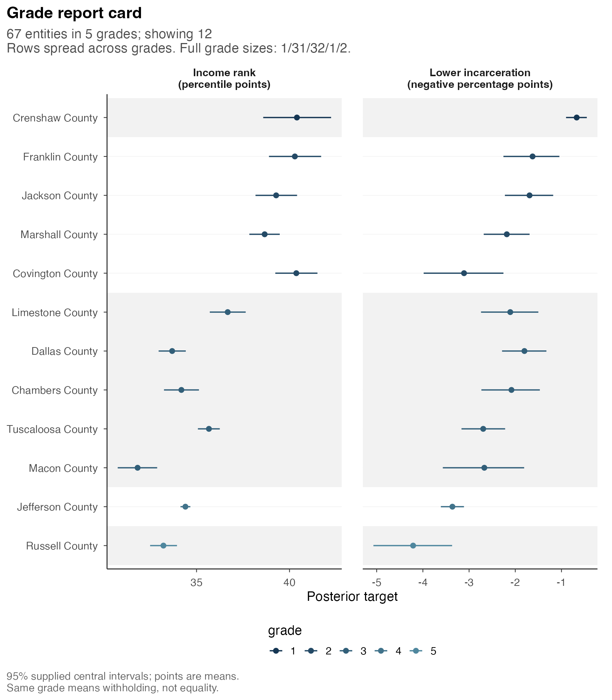
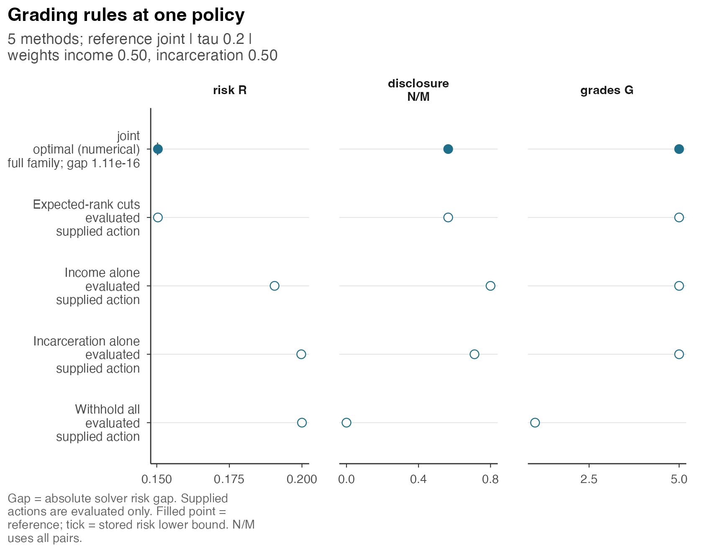

Economic opportunity in Alabama: income and incarceration
Source:vignettes/a4-alabama-opportunity.Rmd
a4-alabama-opportunity.RmdA common ordering of counties may require comparisons across outcomes whose directions of association differ. We consider income and incarceration for all 67 Alabama counties, accounting for posterior uncertainty in each outcome. The analysis examines the comparisons disclosed by a common grading and evaluates that grading alongside separate outcome-specific reports.
The targets concern historical outcomes of children from families with low parental income. Higher priority corresponds to higher income and lower incarceration, rather than greater need for funding. Grade 1 is the most favorable group under these directions. Comparisons within a grade are withheld without an assertion that county outcomes are equal.
The results use a prepared HiGHS analysis of the supplied input. Rendering the article requires neither model fitting nor optimization. An optional call specifies recomputation when HiGHS is available.
Population and outcomes
The Opportunity Atlas replication data describe children born in 1978–1983, with outcomes evaluated at the 25th percentile of parental income and pooled across race and gender. The geography uses 2010 county identifiers. All 67 Alabama counties have both published estimates and positive standard errors, so none is omitted from this analysis.
The two outcomes refer to different dates. Income is the child’s household income rank, based on income averaged over 2014–2015. Incarceration is the probability of residing in a correctional facility on April 1, 2010. It is a snapshot, rather than lifetime incarceration or current crime. The underlying variable definitions are described in the county data codebook. These historical conditional outcomes do not identify the causal effect of growing up in a particular county or of changing a policy today.
The package retains the published estimates, standard errors and county names. Income ranks are expressed in percentile points, and incarceration probabilities in percent with standard errors in percentage points. The following table contains the observations entering the model, before posterior estimation:
show <- match(c("Baldwin County", "Coosa County", "Crenshaw County",
"Russell County"), alabama$units$county_name)
observed <- alabama$units[show, c("county_name", "income_estimate_points",
"income_se_points", "incarceration_estimate_points",
"incarceration_se_points")]
knitr::kable(observed, row.names = FALSE, digits = 2,
col.names = c("County", "Income rank", "Income SE",
"Incarceration (%)", "Incarceration SE"))| County | Income rank | Income SE | Incarceration (%) | Incarceration SE |
|---|---|---|---|---|
| Baldwin County | 38.88 | 0.36 | 2.26 | 0.25 |
| Coosa County | 35.27 | 0.96 | 5.45 | 1.13 |
| Crenshaw County | 40.95 | 1.01 | 0.42 | 0.14 |
| Russell County | 33.12 | 0.37 | 4.49 | 0.44 |
The published standard errors account for sampling uncertainty and privacy noise. They enter the model once, without an additional privacy variance. The population-count column is descriptive; it serves neither as a binomial denominator nor as a weight in the grading loss.
From published estimates to posterior comparisons
The prepared analysis fitted each outcome separately. Its observation model treats a published estimate as Gaussian around a latent county mean, with the published standard error. A logistic-normal model partially pools those latent means across Alabama counties. The latent means lie between zero and one on the original fraction scale; the noisy observations are not clipped to that range.
On the original fraction scale, the intercept prior is centered at .40 for income and .03 for incarceration; its logit-scale standard deviation is 1.5. The between-county logit standard deviation has a half-normal prior with scale 1. Those choices and the Alabama-only pooling population are part of the interpretation of the resulting uncertainty. The supplied probabilities are conditional on this model and these observations.
For grading, the income target is 100 times the latent income fraction; the incarceration target is minus 100 times the latent incarceration probability. Thus a target of −1 is more favorable than −4 on the incarceration panel. Larger values therefore receive higher priority for both oriented targets.
alabama$input contains estimated probabilities of a
wrong-direction comparison for every pair and each criterion, together
with marginal means and 95% equal-tail posterior intervals for these
same targets. The probabilities came from the selected numerical pool A.
The original within-criterion draws retained dependence among counties,
including dependence induced by shared model parameters.
Separate criterion fits suffice for the weighted sum of expected losses, but do not identify the posterior probability of simultaneous improvement in both outcomes. The compact input contains probability tables and marginal summaries without chains, effective sample sizes or information for new Monte Carlo diagnostics. Report cards therefore require the supplied interval level explicitly; other interval levels cannot be recovered from these summaries.
posterior_means <- postrank_posterior_means(alabama$input, level = .95)
posterior_means[show, ]
#> criterion
#> entity income incarceration
#> 01003 38.84718 -2.2332325
#> 01037 35.52763 -3.8426327
#> 01041 40.39833 -0.6706353
#> 01113 33.21921 -4.2114555Loss for the common grading
The analysis assigns equal weights to income and incarceration, permits at most five grades and sets the loss for withholding a pair to .20:
settings <- postrank_settings(
weights = c(income = .5, incarceration = .5),
tau = .20, G_max = 5L
)For each pair assigned different grades, the loss uses the weighted
posterior probability that its announced direction is wrong. A pair in
the same grade contributes tau. The reported risk averages
these costs over all county pairs. Equal weights here give equal weight
to the two error probabilities; they do not add income points to
incarceration percentage points. Each county pair has equal weight.
These settings express illustrative preferences rather than estimates from the Atlas. Increasing the withholding cost increases the loss assigned to an unordered comparison. The five-grade cap constrains the complete report while allowing solutions with fewer groups.
The following optional calculation uses the settings of the prepared result and is not executed during article rendering:
common <- postrank(
alabama$input, settings = settings, level = .95,
backend = "highs",
control = postrank_control(time_limit = 30, threads = 1L, seed = 1304L),
fragility = FALSE
)
common
#> <postrank_analysis> 67 entities in 5 grades (sizes 1 / 31 / 32 / 1 / 2)
#> 2 criteria: income, incarceration.
#> Posterior loss: 0.1504.
#> Disclosed 1249 of 2211 pairs (56.5%); withheld 962.
#> Expected error among disclosed pairs: income 0.052; incarceration 0.172.
#> Solver: Optimal within solver tolerances.
#> Optimization gap: 1.11e-16; requested absolute gap 1e-08.
#> Prepared: report card.
#> Grade 1 has highest priority; a shared grade withholds the comparison.
#> 67 entities; membership in get_grades(x)
#> i summary(x) explains the loss, settings and bounds; get_grades(x) returns
#> all grades.The common report occupies 5 grades, orders 1,249 of 2,211 county pairs (56.5%), and withholds the remaining 962 pairs. Its expected loss is 0.150394, compared with .20 for withholding every pair. The groups are uneven:
grades <- get_grades(common)
grade_sizes <- as.data.frame(table(grades), stringsAsFactors = FALSE)
names(grade_sizes) <- c("Grade", "Counties")
knitr::kable(grade_sizes, row.names = FALSE)| Grade | Counties |
|---|---|
| 1 | 1 |
| 2 | 31 |
| 3 | 32 |
| 4 | 1 |
| 5 | 2 |
The large middle grade reflects the selected loss and grade cap, which allow many within-group comparisons to remain withheld. Its membership has no interpretation as equality of county outcomes. The two outcomes can also support different comparison directions.
profile <- get_profile(common)
knitr::kable(profile[c("criterion", "E", "E_over_N", "risk")],
digits = 4, row.names = FALSE,
col.names = c("Criterion", "Expected wrong directions",
"Errors per ordered pair", "Criterion loss"))| Criterion | Expected wrong directions | Errors per ordered pair | Criterion loss |
|---|---|---|---|
| income | 64.9662 | 0.0520 | 0.1164 |
| incarceration | 215.2747 | 0.1724 | 0.1844 |
The denominator of the third column is the 1,249 ordered pairs. The income error rate is 5.2%, while incarceration’s is 17.2%. Equal loss weights do not imply equal expected error rates. The final column includes the cost of withheld pairs and therefore differs from the expected error rate among ordered pairs.
The prepared solve records optimal status and an absolute optimization gap of 1.11e-16. That gap compares a feasible grading’s loss with a numerical lower bound for the supplied pool-A probabilities. It does not measure posterior uncertainty, Monte Carlo error in those probabilities, or the model’s accuracy for the population.
County posterior summaries and grades
The figure displays 12 counties distributed across all five grades,
using county names and the original units after the stated sign change.
This selection concerns presentation only; all 67 counties enter the
analysis. Setting max_rows = NULL includes every county and
requires a taller saved figure. Alternatively, entities
specifies county IDs for display.
county_names <- setNames(alabama$units$county_name, alabama$units$entity_id)
postrank_plot_report_card(common, max_rows = 12,
entity_labels = county_names,
criterion_labels = c(
income = "Income rank\n(percentile points)",
incarceration = "Lower incarceration\n(negative percentage points)"
)
)
Open full-size figureSelected counties from the full 67-county report. Points are posterior means and bars are supplied 95% equal-tail marginal intervals. Income is in percentile points; incarceration is negative percentage points. The intervals are conditional on the fitted model and are not simultaneous bands. Shared grades withhold comparisons.
Crenshaw County is the single county in grade 1. Its posterior mean income rank is 40.4 percentile points and its posterior mean incarceration probability is 0.67% on the original positive scale. Montgomery and Russell counties share grade 5; the report leaves their mutual comparison unordered. A grade number does not give the size of an outcome difference between counties.
Within each panel, horizontal intervals describe posterior uncertainty in county targets. They do not represent uncertainty in grade labels. The grading uses pairwise probabilities to select a coherent ordered grouping across both criteria, so marginal interval overlap alone does not determine disclosure. A shared grade likewise makes no assertion that either interval contains the other county’s target value.
County IDs are retained when names are used as display labels. The complete grade membership table is obtained without a new optimization:
Comparison with outcome-specific reports
The case includes archived income-only and incarceration-only grade vectors, called D1 and D2, plus an expected-rank cut rule called B3. B3 fixes the order of counties using weighted expected ranks, then chooses the best contiguous grade boundaries in that order. Its optimization covers those boundaries; the common optimization can search beyond that fixed order.
The common report and B3 have identical grades and pair relations in this example, and hence there is no improvement over B3. This agreement does not establish equivalence of the methods in other settings. In particular, a fixed-order optimization alone cannot provide a lower bound over all ordered groupings.
The stored alternatives can be evaluated under the same two-criterion loss without further optimization:
comparison <- postrank_compare(common,
`Expected-rank cuts` = alabama$reference$actions$B3,
`Income alone` = alabama$reference$actions$D1,
`Incarceration alone` = alabama$reference$actions$D2,
`Withhold all` = alabama$reference$actions$B0,
baselines = character()
)
knitr::kable(comparison$table[c("method", "risk", "N", "G")],
digits = 6, row.names = FALSE,
col.names = c("Report", "Two-criterion loss", "Ordered pairs", "Grades"))| Report | Two-criterion loss | Ordered pairs | Grades |
|---|---|---|---|
| joint | 0.150394 | 1249 | 5 |
| Expected-rank cuts | 0.150394 | 1249 | 5 |
| Income alone | 0.190573 | 1769 | 5 |
| Incarceration alone | 0.199764 | 1572 | 5 |
| Withhold all | 0.200000 | 0 | 1 |
The joint row is the prepared common result. The other
rows evaluate supplied grade vectors; this call does not attach their
historical solver bounds to the two-criterion loss. In particular, an
income-only optimization bound concerns income’s objective, not the loss
obtained by applying those grades to both outcomes.
postrank_plot_compare(comparison)
Open full-size figureAll reports evaluated on pool A with weights .5/.5, withholding cost .20, and at most five grades. Supplied alternatives are evaluated actions, not new solves. The common report and expected-rank cuts coincide; withholding every pair has no defined error rate among ordered pairs.
Each separate report can also be evaluated under its own criterion. The following table compares that loss with the corresponding criterion loss in the common report:
single <- alabama$reference$single_criterion
single_loss <- vapply(seq_len(nrow(single)), function(i) {
criterion <- single$criterion[i]
postrank_evaluate(alabama$reference$actions[[single$method[i]]],
alabama$alternatives[[criterion]], weights = setNames(1, criterion),
tau = settings$tau)$primary_risk
}, numeric(1))
common_loss <- profile$risk[match(single$criterion, profile$criterion)]
cost <- data.frame(Criterion = single$criterion,
Common = common_loss, Separate = single_loss,
Difference = common_loss - single_loss,
Archived_gap = single$gap)
knitr::kable(cost, digits = 6, row.names = FALSE,
col.names = c("Criterion", "Common loss", "Separate loss",
"Extra loss for common grades", "Separate solver gap"))| Criterion | Common loss | Separate loss | Extra loss for common grades | Separate solver gap |
|---|---|---|---|---|
| income | 0.116403 | 0.061578 | 0.054824 | 0 |
| incarceration | 0.184385 | 0.119857 | 0.064528 | 0 |
The separate optimizations were recorded as optimal by postrank 0.9.0 with HiGHS 1.12.0.3. Here their fixed grades are reevaluated and their archived bounds retained, without repeating the full optimizations. The differences quantify the loss incurred by requiring a common report instead of separate outcome-specific reports. Their equal-weight average is 0.059676. This quantity is expressed in loss units; it is neither a monetary cost nor a posterior credible interval. The separate reports are also not an admissible replacement when a single common grading is required.
Numerical replication with fixed observations
Pool B is a separate numerical run using the same models and observations. The source retained 16,000 draws per criterion in A and 8,000 in B. These are draw counts from the original runs; the package input contains the resulting summaries. Pool B assesses numerical integration without providing additional counties or independent observational replication.
We evaluate the fixed pool-A grades under both probability inputs:
ev_A <- postrank_evaluate(grades, alabama$input, settings = settings)
ev_B <- postrank_evaluate(grades, alabama$alternatives$pool_B,
settings = settings)
pool_check <- data.frame(Pool = c("A", "B"),
Fixed_report_loss = c(ev_A$primary_risk, ev_B$primary_risk),
Ordered_pairs = c(ev_A$N, ev_B$N))
knitr::kable(pool_check, digits = 6, row.names = FALSE)| Pool | Fixed_report_loss | Ordered_pairs |
|---|---|---|
| A | 0.150394 | 1249 |
| B | 0.150342 | 1249 |
The loss changes by -0.000051; the number of ordered pairs stays fixed because the grade vector stays fixed. The source also reselected a report using B and recorded 0 changed pair relations relative to A. That is a descriptive numerical stability result. Selecting and evaluating on B would not make B an independent evaluation of the newly selected report.
Pool B did not meet the sensitive-pair Monte Carlo standard-error target of .005 in 486 directional criterion rows; its maximum was 0.005867. The archived Monte Carlo standard error for the fixed common report’s pool-B loss was 0.0000962, which met the separate .001 fixed-risk target. Thus precision of the aggregate loss can be satisfactory even when some sensitive pair probabilities fail their precision criterion.
Those standard errors were calculated from the original chains and are reported here from the source results. They are not recalculated from these summaries. Constant-trace pair standard errors were unavailable; estimated probabilities of zero or one are not proof of posterior certainty. Neither the numerical repetition nor the optimizer’s small gap validates the model against new observations.
Interpretation and scope
For these historical outcomes, the common grading withholds many county comparisons, has different expected error rates across outcomes and agrees with the expected-rank cut baseline. Separate reports address distinct single-outcome losses. The choice between these formulations is substantive: a lower risk under a different loss does not establish improvement for the original decision problem.
Application to another setting requires specification of the population, target directions, posterior model and intended use of the common grading. The posterior-input article describes input preparation, reading and exporting results documents the result tables, and figures and sensitivity analysis examines changes to settings and figure presentation. A smaller introductory example uses one or several criteria.
The data source is Raj Chetty, John Friedman, Nathaniel Hendren, Maggie R. Jones and Sonya R. Porter (2022), Replication Data for: The Opportunity Atlas: Mapping the Childhood Roots of Social Mobility, Harvard Dataverse, V1.0, doi:10.7910/DVN/NKCQM1. Source: Opportunity Insights and the U.S. Census Bureau. The selected county CSV and documented derivatives are used under CC BY 4.0. Changes include selecting Alabama, adding county identifiers and names, converting display units, reversing the incarceration direction, fitting separate posterior models, and preparing the probabilities and summaries used here. The grades and interpretation are this example’s analysis; no endorsement by the original authors or agencies is implied. These are the older historical county outcomes, distinct from a later policy-needs analysis with different directions and targets.
Posterior inputs specifies the probability information required by this loss. The uncertainty article explains why a stable aggregate risk can coexist with less precise individual comparisons.